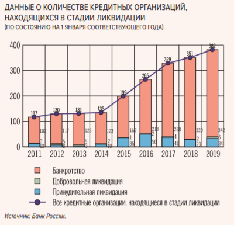
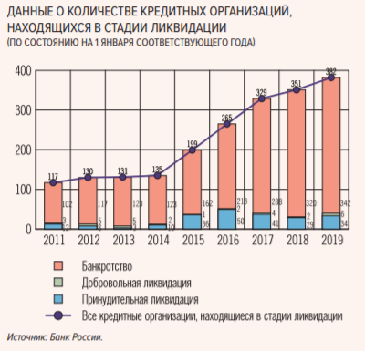

Банкротство кредитных организаций
Структура лекции
- Общие положения.
- Включение в реестр требований кредиторов кредитной организации.
- Сомнительные сделки.
- Гражданско-правовая ответственность контролирующих кредитную организацию лиц.
Статистические сведения.
По данным ЦБ РФ на 01.01.2010 зарегистрировано 1 178 кредитных организаций, на 01.01.2019 среди действующих числится 484 кредитные организации.
| Вариант ликвидации | Последовательность действий |
|---|---|
| Добровольная ликвидация |
- принятие решения участниками (учредителями) о ликвидации; - назначение ликвидационной комиссии по согласованию с ЦБ РФ; - решение ЦБ РФ об аннулировании лицензии на осуществление банковских операций (если нет оснований для отзыва); |
| Принудительная ликвидация |
- ко дню отзыва лицензии отсутствуют признаки несостоятельности (банкротства); - арбитражный суд утверждает ликвидатора; |
| Банкротство |
- отзыв лицензии при наличии предусмотренных законом оснований; - признание кредитной организации банкротом и утверждение конкурсного управляющего. |
Кредитные организации в ликвидации.
 

Банкротство.
Реальная стоимость активов составляет лишь 10% от их балансовой стоимости.
Более чем в 80% случаев причины банкротства имеют криминальный характер
Наиболее важные особенности и отличия.
| Иные юридические лица | Кредитные организации | |
|---|---|---|
| Признаки банкротства (Срок, свидетельствующий о неспособности исполнить требования кредиторов) | 3 месяца | 14 дней |
| Признаки банкротства (Размер требований для целей принятия заявления) | 300 тысяч рублей | 100 тысяч рублей |
| Право на обращение в суд с заявлением о признании должника банкротом (только после отзыва лицензии и при наличии решения суда для ряда заявителей) |
|
|
| Процедуры, применяемые в деле о банкротстве | наблюдение, финансовое оздоровление, внешнее управление, мировое соглашение, конкурсное производство | только конкурсное производство |
| Конкурсный управляющий | гражданин Российской Федерации, являющийся членом саморегулируемой организации арбитражных управляющих | Агентство/ликвидатор, аккредитованный при ЦБ РФ |
Процедура.
- Отзыв лицензии.
- Назначение временной администрации.
- Направление в суд заявления о признании должника банкротом.
- Введение моратория на удовлетворение требований кредиторов кредитной организации.
- Решение о признании банка несостоятельным (банкротом), введении процедуры конкурсного производства, возложении функций конкурсного управляющего на Агентство.
- Созыв первого собрания кредиторов.
Включение в реестр.
- Кредиторы кредитной организации вправе предъявить свои требования к кредитной организации в любой момент в период деятельности временной администрации по управлению кредитной организацией
-
Временная администрация по управлению кредитной организацией рассматривает предъявленное требование в
течение 30 рабочих дней со дня получения этого требования. По результатам рассмотрения уведомляет
соответствующего кредитора:
- о включении его требования в реестр требований кредиторов,
- об отказе в таком включении,
- о включении требования в неполном объеме.
- Также кредитор имеет право предъявить свои требования в срок, установленный Агентством, но не менее 60 дней с момента опубликования сведений о принятии решения о признании должника банкротом.
-
Агентство рассматривает предъявленное требование в течение 30 рабочих дней со дня получения этого
требования. По результатам рассмотрения уведомляет соответствующего кредитора:
- о включении его требования в реестр требований кредиторов,
- об отказе в таком включении,
- о включении требования в неполном объеме.
- Кредитор имеет право заявить возражения по результатам рассмотрения требований конкурсным управляющим в арбитражный суд в течение 15 календарных дней с момента получения уведомления Агентства о результатах рассмотрения требования.
Очередность удовлетворения требований кредиторов кредитных организаций.
-
Первая очередь:
- требования физических лиц за причинение вреда их жизни или здоровью;
- требования физических лиц, являющихся кредиторами кредитной организации по заключенным с ними договорам банковского вклада и (или) договорам банковского счета;
- требования Агентства по договорам банковского вклада (депозита) и договорам банковского счета, перешедшие к нему в соответствии с Федеральным законом "О страховании вкладов в банках Российской Федерации"
-
Вторая очередь:
- расчеты по выплате выходных пособий и (или) оплате труда лиц, работающих или работавших по трудовому договору, и по выплате вознаграждений авторам результатов интеллектуальной деятельности;
-
Третья очередь:
- расчеты с другими кредиторами.
Примечание. После расчетов с кредиторами третьей очереди производятся расчеты с кредиторами по удовлетворению требований по сделке, признанной недействительной на основании пункта 2 статьи 61.2 и пункта 3 статьи 61.3 Закона о банкротстве.
Виды сомнительных сделок:
- сделки по выводу активов (имущества) банка (например, отчуждение имущества по заниженной цене и/или на невыгодных условиях);
- сделки по искусственному формированию обязательств банка (выдача банковских гарантий по обязательствам заведомо неплатежеспособных должников, безвозмездная выдача векселей);
- сделки/действия, совершенные с нарушением кредитной организацией очередности исполнения своих обязательств (сделки с предпочтением).
Особенности, установленные ст. 189.40 Закона о банкротстве.
| Дата, с которой исчисляются сроки на оспаривание сделок | дата назначения Банком России временной администрации по управлению кредитной организацией |
| Субъекты оспаривания |
руководитель временной администрации по управлению кредитной организацией, кредитная организация в лице конкурсного управляющего, кредитор или уполномоченный орган (при размере требований более 10% ) |
| Презумпции выхода за пределы обычной хозяйственной деятельности | (на раздаточном материале) |
Специальные основания оспаривания сомнительных сделок, предусмотренные Законом о банкротстве.
- Сделки при неравноценном встречном исполнении обязательств (п. 1 ст. 61.2 Закона о банкротстве).
- Сделки с целью причинения вреда имущественным правам кредиторов (п. 2 ст. 61.2 Закона о банкротстве).
- Сделки, повлекшие оказание предпочтения одному из кредиторов перед другими (п. 1 ст. 61.3 Закона о банкротстве).
- Сделки, повлекшие оказание предпочтения одному из кредиторов перед другими при осведомленности о неплатежеспособности (п. 3 ст. 61.3 Закона о банкротстве).
Особенности применения п.1 ст.61.2 Закона о банкротстве.
Наиболее распространенные сделки, совершаемые кредитными организациями в период подозрительности:
Сделки с предпочтением
- сделки с выборочным исполнением требований кредиторов банка;
- сделки по погашению кредитов внитрибанковскими проводками;
- сделки по выдаче денежных средств из кассы;
Подозрительные сделки
- сделки по расторжению обеспечительных сделок;
- сделки по уступке права требования по ликвидным кредитам или отчуждению недвижимости при неравноценном встречном исполнении;
- сделки по уступке права требования по ликвидным кредитам или отчуждению недвижимости (ценных бумаг) (с оплатой внутрибанковскими проводками);
- выплаты «золотых парашютов»;
- сделки по переводу долга;
- сделки по рефинансированию;
- сделки по «дроблению» вкладов.
Сделки с выборочным исполнением требований кредиторов банка.
Основание оспаривания: п. 1 ст. 61.3 Закона о банкротстве
Порок сделки: удовлетворение требований одного кредитора в льготном порядке
Предмет доказывания:
- Сделка совершена в течение 1 месяца до даты назначения временной администрации.
- Отдельному кредитору оказано предпочтение по отношению к другим кредиторам (абз. 5 п. 1 ст. 61.3 Закона о банкротстве).
- Наличие картотеки неисполненных платежных поручений иных клиентов
Сделки по погашению кредитов внутрибанковскими проводками.
Основание оспаривания: п. 1 ст. 61.3 Закона о банкротстве
Порок сделки: удовлетворение требований одного кредитора в льготном порядке
Предмет доказывания:
- Сделка совершена в течение 1 месяца до даты назначения временной администрации.
- Отдельному кредитору оказано предпочтение по отношению к другим кредиторам (абз. 5 п. 1 ст. 61.3 Закона о банкротстве).
- Наличие картотеки неисполненных платежных поручений иных клиентов/мнимость банковской операции/необоснованный разумными экономическими причинами возврат кредита.
Сделки по выдаче денежных средств из кассы.
Основание оспаривания: п. 1 ст. 61.3 Закона о банкротстве
Порок сделки: удовлетворение требований одного кредитора в льготном порядке
Предмет доказывания:
- Сделка совершена в течение 1 месяца до даты назначения временной администрации.
- Отдельному кредитору оказано предпочтение по отношению к другим кредиторам (абз. 5 п. 1 ст. 61.3 Закона о банкротстве).
- Наличие картотеки неисполненных платежных поручений иных клиентов.
Сделки по расторжению обеспечительных сделок.
Основание оспаривания: ст.ст. 10, 168 ГК РФ и п. 2 ст. 174 ГК РФ
Порок сделки: утрата права получить удовлетворение требований за счет дополнительной имущественной массы
Предмет доказывания:
- Расторжение договора, обеспечивающего исполнение обязательств по кредитным договорам.
- Отсутствие экономического обоснования совершения сделки;
- Явный ущерб.
Сделки по уступке права требования по ликвидным кредитам или отчуждению недвижимости при неравноценном встречном исполнении.
Структура сделки:
- заключается договор купля-продажа недвижимости;
- оплата производится реальными денежными средствами по цене, существенно ниже рыночной (процентов 50).
Основание оспаривания: п. 1 ст. 61.2 Закона о банкротстве
Порок сделки: выбытие имущества из конкурсной массы при неравноценном встречном исполнении
Предмет доказывания:
- Срок, в течение которого сделка совершена: 1 год до даты назначения временной администрации.
- Неравноценное встречное исполнение обязательств другой стороной сделки или на существенно в худшую сторону отличающихся для кредитной организации условиях.
Сделки по уступке права требования по ликвидным кредитам или отчуждению недвижимости (ценных бумаг) (с оплатой внутрибанковскими проводками).
Структура сделки:
- заключается договор об уступке права требования по ликвидным обязательствам (купля-продажа недвижимости);
- оплата производится внутрибанковской проводкой.
Основание оспаривания:
- оспаривание договора по п. 1 ст. 61.2 Закона о банкротстве (неравноценное встречное исполнение).
- оспаривание договора по п. 2 ст. 61.2 Закона о банкротстве (сделка с целью причинения вреда).
- оспаривание оплаты по п. 1 ст. 61.3 Закона о банкротстве (преимущественное удовлетворение).
- оспаривание цепочки сделок по п. 2 ст. 170 ГК РФ, прикрывающих соглашение об отступном, недействительное также по п. 1 ст. 61.3 Закона о банкротстве (преимущественное удовлетворение).
| Предмет доказывания по п. 1 ст. 61.2: срок, в течение которого сделка совершена: 1 год до даты назначения временной администрации; неравноценное встречное исполнение обязательств другой стороной сделки. | Предмет доказывания по п. 2 ст. 61.2: срок, в течение которого сделка совершена: 3 года до даты назначения временной администрации; цель причинения вреда имущественным правам кредиторов (презюмируется, если: 2.1. неплатежеспособность; 2.2. безвозмездная сделка (мнимость оплаты)) причинение вреда; осведомленность о цели причинения вреда (презюмируется, если осведомленность об ущемлении интересов кредиторов или о признаках неплатежеспособности или недостаточности имущества.) |
Выплаты «золотых парашютов».
Основание оспаривания: ст. 61.2 Закона о банкротстве
Порок сделки: уменьшение размера имущества
Предмет доказывания:
- срок, в течение которого сделка совершена: 3 года до даты назначения временной администрации.
-
цель причинения вреда имущественным правам кредиторов; опровержимые презумпции (считается доказанной
при наличии 2 следующих обстоятельств):
- неплатежеспособность;
- безвозмездная сделка или в отношении заинтересованного лица.
- причинение вреда.
-
осведомленность о цели причинения вреда; опровержимые презумпции:
- осведомленность об ущемлении интересов кредиторов или о признаках неплатежеспособности или недостаточности имущества
Сделки по переводу долга.
Структура сделки:
- Выдача кредита платежеспособному лицу.
- Перевод долга такого лица на техническую компанию.
Основание оспаривания: ст. 61.2 Закона о банкротстве, ст.ст. 10, 168 ГК РФ, п. 2 ст. 174 ГК РФ
Порок сделки: утрата возможности удовлетворить требования по обязательствам
Предмет доказывания:
- срок, в течение которого сделка совершена: 1 год до даты назначения временной администрации.
- неравноценное встречное исполнение
Сделки по рефинансированию задолженности.
Структура сделки:
- Банк выдает кредит 1 лицу с заключением обеспечительной сделки в отношении дорогостоящего имущества.
- Через некоторое время Банк выдает другому лицу еще 1 кредит, лицо, как правило техническое, без обеспечения.
- Денежные средства по кредитному договору 2 лица цепочкой последовательных сделок перечисляются на счет первого лица, который ими гасит кредит.
- В результате сделок обязательство по кредитному договору прекращается надлежащим исполнением, Банк как залогодержатель теряет право в отношении заложенного имущества.
Основание оспаривания: ст. 61.2 Закона о банкротстве, ст.ст. 10, 168 ГК РФ, п. 2 ст. 174 ГК РФ
Порок сделки: утрата возможности удовлетворить требования по обязательствам
Предмет доказывания:
- срок, в течение которого сделка совершена: 1 год до даты назначения временной администрации.
- неравноценное встречное исполнение
Сделки по «дроблению вкладов».
Структура сделок:
- Имеется остаток на счете юридического лица
- Совершается операция по снятию денежных средств.
- Затем во вклады подставных физических лиц вносится по 1,4 млн рублей, как правило в нарушение запрета ЦБ РФ на привлечение вкладов физических лиц.
Сделки оспариваются, как правило, Агентством, а не Банком.
Основания недействительности: ст. 170 ГК РФ, ст. 140, 834 ГК РФ
Гражданско-правовая ответственность контролирующих Банк лиц.
Лица, имеющие право на подачу такого заявления:
- конкурсный управляющий по своей инициативе либо по решению собрания кредиторов или комитета кредиторов;
- уполномоченный орган;
- конкурсный кредитор в случае неисполнения конкурсным управляющим решения собрания или комитета кредиторов о его подаче.
Субъекты ответственности - контролирующие лица, имеющие возможность определять действия должника:
- в силу нахождения с должником (руководителем или членами органов управления должника) в отношениях родства или свойства, должностного положения;
- в силу наличия полномочий совершать сделки от имени должника,
- в силу должностного положения,
- иным образом, в том числе путем принуждения руководителя или членов органов управления должника либо оказания определяющего влияния на руководителя или членов органов управления должника иным образом.
Соотношение субсидиарной ответственности и ответственности в форме возмещения убытков.
Предмет доказывания по заявлению о привлечении к субсидиарной ответственности больше на 1 юридический факт: действия повлекли объективное банкротство должника (причинно-следственная связь между действиями и банкротством).
Суд квалификацией заявителя не связан.
Банкротство ЗАО «Международный Промышленный Банк»
- Определен размер субсидиарной ответственности до окончания расчетов с кредиторами.
- Привлечено к ответственности фактически контролирующее лицо (схема владения через многоуровневые дискреционные трасты).
- Приведение в исполнение судебных актов в иностранных юрисдикциях.
Предмет доказывания по заявлению о взыскании убытков.
- принадлежность заинтересованных лиц к числу контролирующих лиц,
- факт причинения Банку убытков,
- причинно-следственная связь между действиями (бездействием) заинтересованных лиц и причинением Банку убытков,
- противоправность и виновность действий (бездействия) заинтересованных лиц,
- размер причиненных Банку убытков.
Основания для отказа можно условно подразделить на две категории:
-
Сделки совершались в пределах «обычного делового риска»:
- заемщики, кредитование которых осуществлялось на основании волеизъявления контролирующих лиц, производили оплату процентов по кредитам до даты отзыва у Банка лицензии;
- содержащаяся в Банке и предоставленная ИФНС России № 23 по г. Москве отчетность заемщиков свидетельствует о положительных финансовых результатах;
- кредитные досье сформированы в соответствии с требованиями внутренних документов Банка.
-
Иные основания:
- решения о выдаче кредитов/займов не относились к компетенции Правления Банка, при этом соответствующие решения Правления были приняты и реализованы
- в период отзыва у Банка лицензии в экономике существовали негативные процессы, которые были вызваны кризисом финансово-экономической системы
- решения контролирующих лиц принимались на основании положительных заключений юридического, финансового и кредитного отделов.